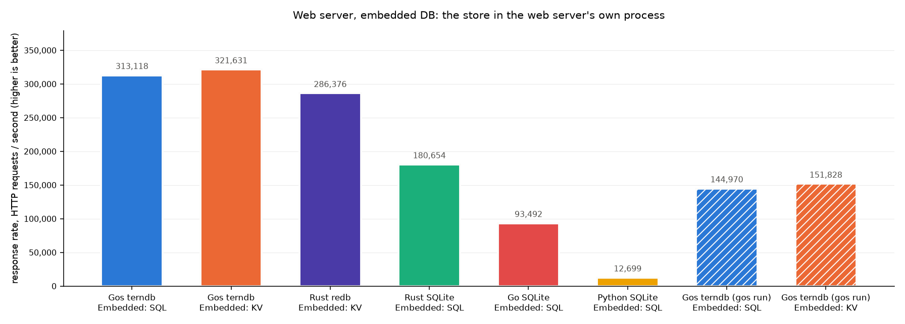
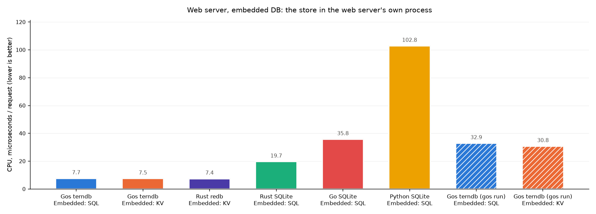
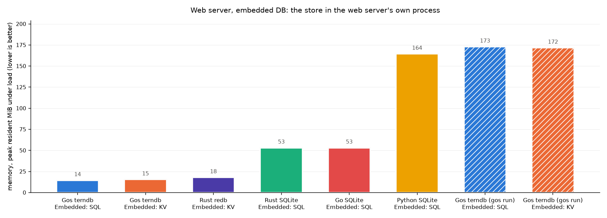

Over HTTP: 50,000 rows, 8 concurrent workers, 5s measured per target. In process: 50,000 rows, one thread, 5s measured per target. On 24 cores (Linux 7.0.0-31-generic).
The HTTP charts report the three numbers a deployment is chosen on - response rate, CPU per request and peak memory. A Go client drives concurrent GETs at a web server, and the store runs in that server's own process. The query-only charts have no HTTP in them at all - one thread calling the store it is linked against - so they report queries per second and the memory the store costs to run. Every bar in a chart answered the same request against the same seeded dataset. A variant - the `gos run` tier, or redb holding typed columns - is hatched and shares its path's colour.



| target | response rate, req/s | CPU, us/req | memory, peak MiB |
|---|---|---|---|
| Gos terndb Embedded: KV (gos-terndb-embedded-kv) | 321,631 | 7.5 | 15.4 |
| Gos terndb Embedded: SQL (gos-terndb-embedded-sql) | 313,118 | 7.7 | 14.5 |
| Rust redb Embedded: KV (rust-redb-embedded-kv) | 286,376 | 7.4 | 17.9 |
| Rust SQLite Embedded: SQL (rust-sqlite-embedded-sql) | 180,654 | 19.7 | 53.1 |
| Gos terndb (gos run) Embedded: KV (gos-terndb-embedded-kv-gos-run) | 151,828 | 30.8 | 171.6 |
| Gos terndb (gos run) Embedded: SQL (gos-terndb-embedded-sql-gos-run) | 144,970 | 32.9 | 172.9 |
| Go SQLite Embedded: SQL (go-sqlite-embedded-sql) | 93,492 | 35.8 | 53.1 |
| Python SQLite Embedded: SQL (python-sqlite-embedded-sql) | 12,699 | 102.8 | 164.4 |
| target | queries/s | memory, peak MiB |
|---|---|---|
| gos-kv Embedded: (gos-kv) | 9,567,232 | 14.1 |
| gos-sql Embedded: (gos-sql) | 8,468,480 | 14.3 |
| rust-redb Embedded: (rust-redb) | 2,588,817 | 15.6 |
| rust-redb-typed Embedded: (rust-redb-typed) | 1,947,658 | 11.9 |
| rust-sqlite Embedded: (rust-sqlite) | 697,874 | 5.9 |
| go-sqlite Embedded: (go-sqlite) | 103,935 | 18.0 |